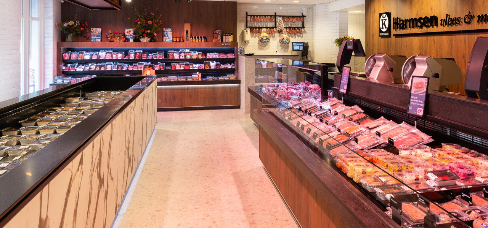
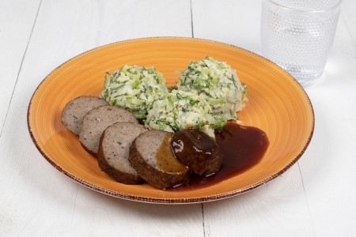
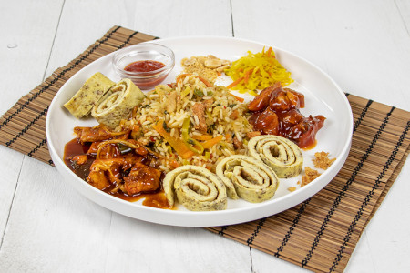
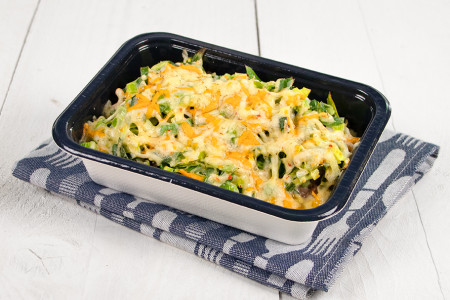
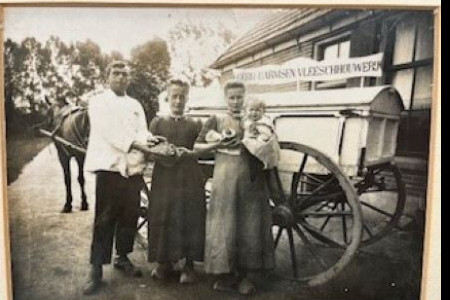
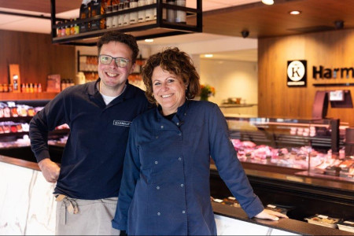
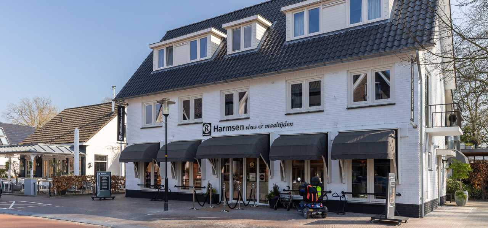

Keurslager in Diepenveen
Nieuwe winkel.
Smaak als vanouds.
Vers vlees, worst uit eigen makerij en elke dag meer dan 40 verse maaltijden uit onze eigen keuken. Familie Harmsen, sinds 1910.
4,6 uit 74 Google-reviews

Geen tijd om te koken? Dan kookt onze keuken.
Naast vers vlees zijn onze maaltijden niet meer weg te denken. Elke dag staan er drie koks in onze eigen keuken, zodat u altijd zo vers mogelijk eet.
Kies uit meer dan 40 complete maaltijden, Hollands, Oosters of Italiaans. Of stel uw bord zelf samen uit losse onderdelen. Het leukst is gewoon even langskomen en kijken.



Stel uw eigen bord samen
Een greep uit ons assortiment. Sommige gerechten zijn er alleen in het seizoen.
Vlees
- Gehaktbal
- Rookworst
- Gebraden sukadelapje
- Speklapje
- Gebraden saucijsjes
- Karbonade
- Varkenshaas in champignonroomsaus
- Hachee
Vlees
- Kip pilav
- Hazenpeper
- Indische smoor
- Kip kerrie
- Gehaktballetjes in ketjapsaus
- Naturel gehaktballetje
- Gevulde paprika met gehakt
Aardappel, rijst & pasta
- Aardappelpuree
- Aardappelpartjes met schil
- Aardappelgratin
- Gekookte aardappels
- Krieltjes
- Aardappeltimbaaltje
- Nasi, bami of groenterijst
- Spaghetti en macaroni
Groente
- Bloemkool
- Gemengde groente
- Rode kool
- Broccoli
- Snijbonen en sperziebonen
- Spinazie
- Tuinbonen
- Worteltjes
Stamppotten
- Zuurkool
- Andijvie
- Boerenkool
- Hutspot
- Snijbonen

Verstand van lekker eten
Onze vleeswaren, worst en vleesspecialiteiten maken we zelf, altijd met verse ingrediënten. Zo kunt u met ons ruime aanbod elke dag iets lekkers op tafel zetten.
We bedenken ook graag nieuwe producten, zoals de Special: een verrassende combinatie van vlees met groenten, kruiden, kaas en fruit.
Er bestaat geen mooier vak dan het slagersvak. Dat proeft u terug.
Een feest thuis? Wij zorgen voor het eten.
Alles huisgemaakt en dagvers. Kies een van onze buffetten, hapjes-, gourmet- of saladeschotels, of stel zelf iets samen uit ons hele assortiment. Ook voor een groter feest bent u bij ons aan het goede adres.
-
Toscaans buffet
Salade caprese, pastasalade, antipasti met parmaham en salami, stokbrood en focaccia, warme tagliatelle, lasagne en Italiaans gekruide gehaktballetjes in tomatensaus.
minimaal 20 personen
-
Koud buffet 'Veldzigt'
Al jaren een vaste waarde. Rundvleessalade, zalmsalade met paling en garnalen, beenhamschotel, warme varkenshaas in champignonroomsaus en runderlende in rode wijnsaus, vers fruit en een luchtig dessert.
minimaal 20 personen
-
Hapjesbuffet
Kipsaté, gehaktballetjes in ketjapsaus, broodjes beenham met beenhamsaus, rundvleessalade en stokbrood met kruidenboter.
vanaf 12 personen
-
Stamppotbuffet
Zuurkool, hutspot en boerenkool met huisgemaakte rookworst en gehaktbal in jus. In de uitvoering 'compleet' ook met hachee, spareribs, zoetzuur en mosterd. Van september tot en met maart.
vanaf 20 personen
-
Zelf samenstellen
Minder gasten, of niet gevonden wat u zoekt? Stel uw eigen buffet samen uit onze maaltijden. Kom gerust langs in de winkel, dan denken we mee.
vanaf 10 personen
Vier generaties Harmsen


-
1910
G.J. Harmsen, de eerste generatie, begint een marktbedrijf in worst en spek op Den Nul bij Olst.
-
1953
De tweede generatie zet het bedrijf voort in Diepenveen, met worst uit eigen makerij vanuit een schuur aan de Olsterweg. In 1957 volgt daar een klein winkeltje.
-
1971
Na een winkel met worstmakerij in Olst begint Harmsen samen met zoon Gert, de derde generatie, een winkel aan de Olsterweg.
-
1978
Aankoop van het pand aan de Dorpsstraat, ooit een radio- en tv-zaak. Na de verbouwing een complete keurslagerij met royale worstmakerij, gerund door Gert en Betty.
-
2005
Een grotere winkel, meer productieruimte en een eigen culinaire keuken voor maaltijden en buffetten.
-
2011
Zoon Toine, de vierde generatie, neemt de slagerij samen met zijn vrouw Jannemiek over.
-
2025
De hele winkel en productieruimte gaan op de schop. Gemak en snelheid staan voorop, zonder het ambacht, de kwaliteit en de gezelligheid van een dorpsslager te verliezen.
"De winkel is van deze tijd, de smaak als vanouds."
Wat klanten zeggen
4,6 uit 74 reviews op Google
"Gewoon een goeie slager. Heerlijk vlees maar ook de menu’s zijn echt top!"
"Ik haal er nu al 2 maand elke maandag een aantal maaltijden en vind het naast makkelijk ook zeer lekker! Zo veel keuze."
"Prachtig bedrijf en lekker eten en vriendelijk personeel"
Kom langs aan de Dorpsstraat
Dorpsstraat 67431 CK Diepenveen
Openingstijden
| Maandag | 8:30 – 18:00 |
| Dinsdag | 8:30 – 18:00 |
| Woensdag | 8:30 – 18:00 |
| Donderdag | 8:30 – 18:00 |
| Vrijdag | 8:30 – 18:00 |
| Zaterdag | 8:30 – 16:30 |
| Zondag | gesloten |

Cadeau nodig? Bij ons koopt u de Keurslager-cadeaukaart. De waarde bepaalt u zelf, en hij is te besteden bij elke Keurslager in Nederland.